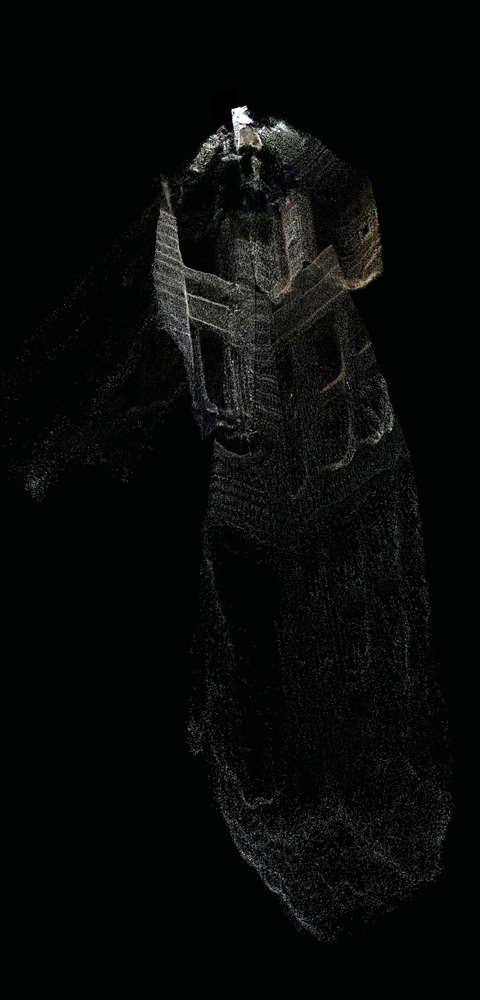

Current Fit
Lattice already centralizes video and sensor context. ENEL turns those inputs into a navigable scene layer that can sit inside the existing Lattice workflow.
Defense Applications
Facility Awareness
Turn available feeds into a shared 3D view of a base, facility, or critical infrastructure site.
Mission Planning
Give operators spatial context for pre-briefs, route review, and remote site familiarization.
Lattice Path
The integration uses Lattice-accessible feeds and sensors as the input, ENEL as the splat service, and Lattice as the operating environment for the resulting scene.
Flow
Lattice SDK > Camera feeds + sensors > ENEL splat service > Lattice scene layer
The Ask
Anduril Lattice Partner
Sponsor Exark into the Lattice Partner Program and identify the product owner for scene-layer review.
Mentor-Protege MPP Intro
Introduce Exark to a potential mentor for a mentor-protege or MPP relationship tied to Lattice-relevant pilots.
Pre-Sales Demos
Use ENEL in Anduril pre-sales and customer walkthroughs where fast 3D scene context helps communicate Lattice value.